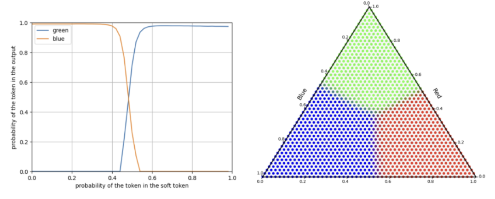
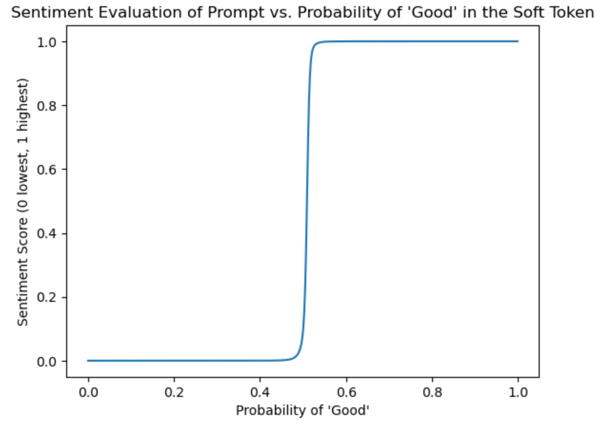
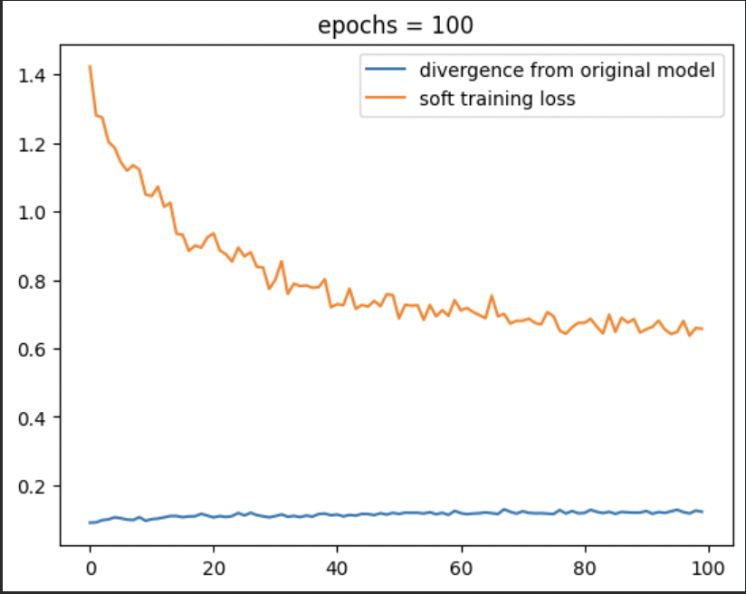
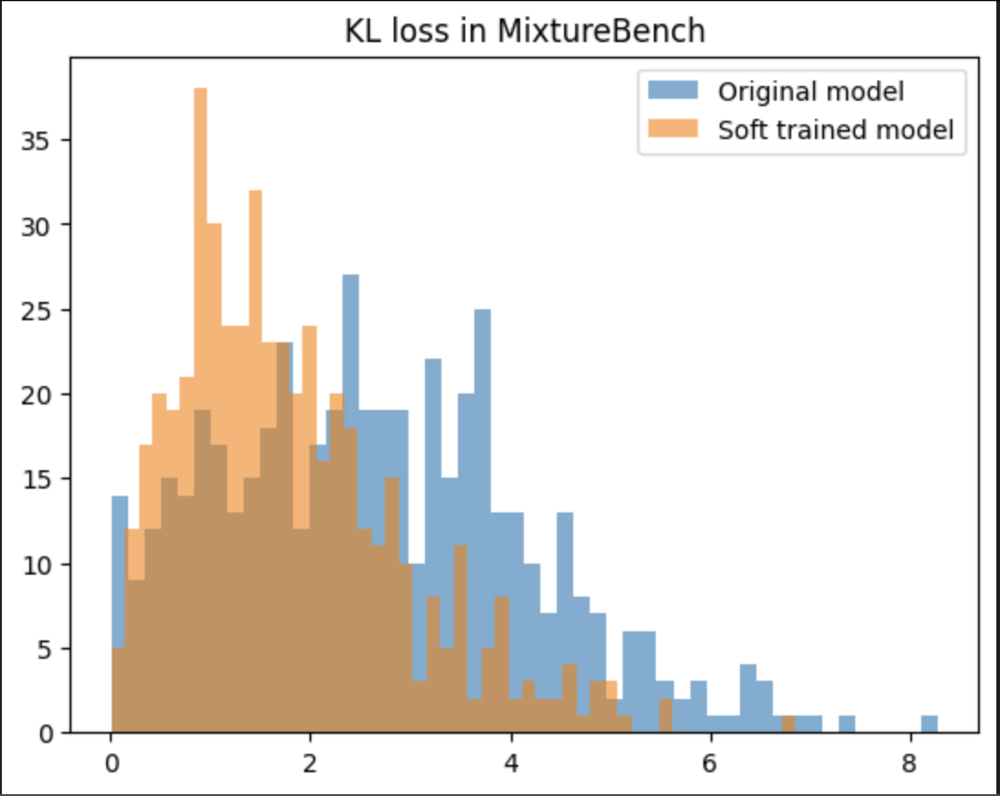

| Mixing Is Not Meaning: Do LLMs Understand Soft Tokens? | |||
| Ali Backour | |||
| December 2025 · Exploratory research note | |||
| Mixing Is Not Meaning: Do LLMs Understand Soft Tokens? | |||
| Ali Backour | |||
| December 2025 · Exploratory research note | |||
Large language models reason, communicate, and plan through discrete natural-language tokens. This is powerful, but it is also a strange constraint: the model has to compress every intermediate step into one token at a time. Human reasoning does not always feel like a sequence of fully verbalized words; it can involve uncertainty, partial concepts, and non-linguistic structure.
This motivates a family of recent methods that try to move chain-of-thought into a more continuous space. Instead of forcing the model to commit to exactly one next token at each step, these methods let the model pass forward a hidden state, a “concept” vector, or a mixture over several possible tokens [1][2].
The question matters because many soft-token ideas implicitly assume that a convex combination of embeddings preserves a convex combination of meanings. If the model assigns 60% probability to one token and 40% to another, then a soft token seems like a natural way to carry both possibilities forward. But that only works if the transformer actually interprets the intermediate vector as a meaningful distributional object.
This post is a lowkey research note about that assumption. The main result is negative but useful: in controlled probes, pretrained models often collapse soft-token mixtures onto their most probable discrete component. We also tried a soft next-token fine-tuning objective on Qwen-style models. It helped optimize the synthetic training objective, but it did not clearly solve the underlying collapse problem.
Let \(V\) be the vocabulary and let \(e_i \in \mathbb{R}^d\) be the embedding of token \(i\). A probability distribution over tokens is a vector \(p \in \Delta^{|V|}\), where \(p_i \ge 0\) and \(\sum_i p_i = 1\). The simplest soft-token construction maps \(p\) to a weighted average of embeddings:
This is the basic construction used in many soft-token discussions: instead of sampling or choosing the most likely token, form a continuous vector that keeps the whole distribution. If this worked perfectly, the model's next-token distribution after receiving \(f_V(p)\) would preserve the information in \(p\).
To measure this, we compare a target distribution \(p\) with the model-produced distribution \(q\) using KL divergence:
Small KL means the model output resembles the intended mixture. Large KL means the model has lost mixture information.
The first probe is intentionally simple. We ask the model to repeat a word, but instead of giving it a normal token, we give it a soft token made from a mixture of token embeddings.
Formally, for a mixture \(p\), we construct
and append it to the prompt
If the model understood the soft token, then the output distribution \(q\) should be close to \(p\). For example, a token that is 70% green and 30% blue should lead to roughly that mixture in the next-token distribution.
That is not what happens. The model mostly outputs whichever token has slightly more mass. Around the midpoint, the output switches sharply from one token to the other.

To check that the effect is not only about repeating color words, we also tried a small sentiment probe. We feed a sentiment model a sentence of the form This movie is v, where \(v\) is a soft token interpolating between the embeddings of good and bad:
If the soft token preserves meaning, then the sentiment score should vary smoothly with the amount of good in the mixture. Instead, the score stays near one extreme and then flips sharply near the midpoint.

bad to good, but the model response behaves more like a hard decision boundary than a smooth semantic interpolation.The simple explanation is that the embedding space is not automatically a semantic probability simplex. Even if the input vector is a linear combination of token embeddings, the transformer applies nonlinear maps after that point.
Let \(\phi\) denote the model's early transformation of the input embedding. As \(p\) varies, the mixture embedding moves along a straight line in embedding space, but the transformed representation \(\phi(e_{\mathrm{soft}})\) may fall into regions that behave like one discrete token or another. In the extreme, the next-token distribution behaves like
In that picture, the model is not carrying the full distribution forward. It is compressing the mixture into the most likely component. This is a problem for any method that hopes soft tokens preserve multiple possible reasoning paths.
One natural response is: maybe pretrained models fail because they were only trained on discrete tokens. So we tried a more direct training objective. During fine-tuning, the model sees a soft token built from a mixture and is trained so that its next-token distribution matches the target mixture.
The training setup follows the soft next-token idea. We sample a small set of candidate tokens \(\{x_{i_1},\dots,x_{i_n}\}\), sample a probability vector \(p \in \Delta^n\), and form a soft embedding
The model then receives a prompt \(P\) concatenated with this soft embedding and produces a next-token distribution
The soft-token loss asks the model output to match the intended mixture:
In practice, we also want the fine-tuned model to preserve normal discrete-token behavior. So the loss can include a hard-token preservation term, comparing the fine-tuned model to the original model on ordinary token inputs:
We tried this with LoRA fine-tuning on Qwen-style models. In one run, we froze the pretrained model and trained LoRA adapters on soft-token examples constructed from WikiText-style prompts, using mixtures over two candidate tokens. The training loss decreases, which means the model is optimizing the synthetic objective to some extent.


The important part is what we do not claim: fine-tuning did not clearly fix the problem. On held-out mixture probes, the behavior still shows substantial collapse, and the improvements are not strong enough for us to say that the model genuinely understands soft tokens. We are still working on whether better data, longer training, different objectives, or architectural changes are necessary.
To make the collapse behavior easier to test systematically, we built MixtureBench: a controlled benchmark for soft-token understanding. The idea is to create categories where the intended interpolation is relatively clear, such as color or sentiment, then vary the mixture probabilities and prompt phrasing.
The benchmark is not meant to prove that continuous reasoning is impossible. It is meant to catch a very specific failure mode: the model receives a continuous vector that should represent a mixture, but its output behaves as if one discrete component had won.
For a prompt \(P\), a candidate token set \(\{x_1,\dots,x_k\}\), and model-generated continuations \(y_i = M(P \Vert x_i)\), we can synthesize a target mixture by sampling \(p \in \Delta^k\) and forming
This gives a controlled way to ask: when the model sees \(P \Vert x_{\mathrm{soft}}\), does it output something close to \(y_{\mathrm{target}}\), or does it collapse toward one of the \(y_i\)?
This is an exploratory project. The probes are controlled and useful, but they are not a full theory of continuous reasoning. They show that one common construction, weighted averaging in embedding space, can fail badly. They do not rule out all possible continuous reasoning methods.
The fine-tuning experiments are also preliminary. We used synthetic mixture data and parameter-efficient adaptation, which may not be enough to change how the model organizes its embedding space. It is possible that larger-scale training or architectures designed for continuous latent states would behave differently.
Finally, this work should not be read as saying that continuous reasoning is impossible. The point is more modest: if a method relies on soft tokens, it should verify that the model actually preserves mixture semantics instead of silently collapsing to a discrete component.
Soft-token reasoning is an appealing idea, but the simplest version has a basic problem: convex combinations of embeddings do not necessarily behave like convex combinations of meanings. In our probes, pretrained models often collapse soft tokens to their dominant discrete component.
Fine-tuning models such as Qwen on a soft next-token loss did not fully fix the issue. The model can reduce training loss, but robust mixture understanding remains unresolved. For now, I think the right framing is not “we solved continuous reasoning,” but rather “here is a simple failure mode that soft-token methods need to confront.”
The next step is to understand whether this collapse is mainly caused by the embedding geometry, the transformer’s early layers, the pretraining objective, or the lack of native continuous-token training. If we can isolate that mechanism, then maybe we can design models that reason in continuous spaces without immediately snapping back to discrete tokens.